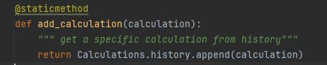
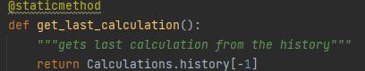
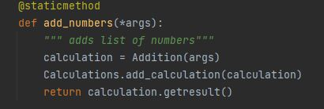
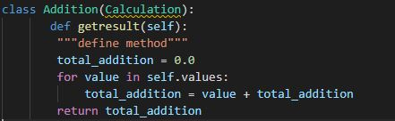

Separation of Concerns
What is it?
It is a software architecture design pattern/principle for separating an application into distinct sections, so each section addresses a separate concern
The general idea is that one should avoid co-locating different concerns within the design or code.
At an architectural level, separation of concerns is a key component of building layered applications.
In a traditional N-tier application structure, layers might include data access, business logic, and user interface.
More modern N-tier application designs might include a core domain model and separate infrastructure modules in addition to one or more front end services and/or user interfaces.
Example used in Calculator
By using the OOP principles and refactoring the code and creating reusable methods to use separation of concern pattern.
Here, we performed different operations like addition, division, subtraction, multiplication and stored the calculations to a history.
Everytime user performs the operation it gets appended to the history method
We can retrieve the last calculation from the history using the below method
Another example used in Calculator
Here, we have used the separate methods to define addition function and then another method to perform the operation
We can retrieve the last calculation from the history using the below method
At a lower level, the networking model used by the Internet is broken into a series of layers each with specific concerns and responsibilities, and demonstrates how separation of concerns can be effectively applied.
Applications may be written to allow functionality to be added or removed in a modular fashion, and many commercial products support this functionality as a means of separating features across product SKUs or to allow third parties to create plug-ins.
Separation of Concerns tends to be a natural consequence of following the Don't Repeat Yourself principle, since of necessity abstractions must be built to encapsulate concepts that would otherwise be repeated throughout the application.
"The dream behind the Web is of a common information space in which we communicate by sharing information. Its universality is essential: the fact that a hypertext link can point to anything, be it personal, local or global, be it draft or highly polished."
Tim Berners-Lee (1998)


Copyright 2021 © Page Designed By - Raj Patel
w3c Validator Link